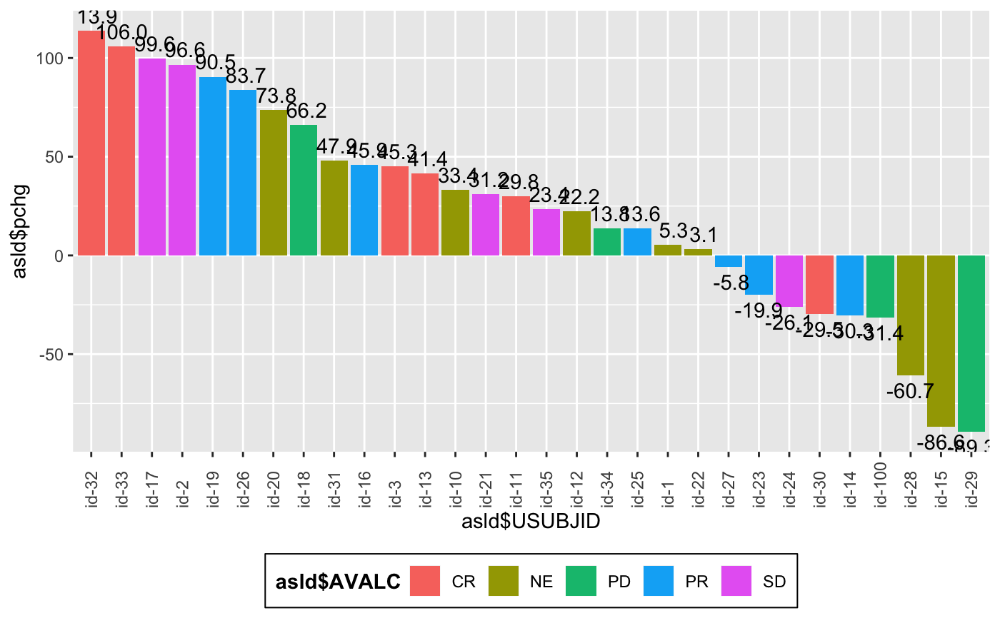
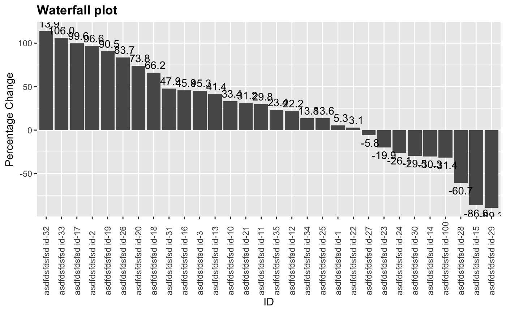

Horizontal Waterfall Plot
g_waterfall.RdThis basic waterfall plot visualizes a quatity height ordered by value with some
markup
g_waterfall(height, id, col = NULL, xlab = NULL, ylab = NULL, col.legend.title = NULL, title = NULL)
Arguments
| height | numeric vector to be plotted as the waterfall bars |
|---|---|
| id | vector of IDs used as the x-axis label for the waterall bars |
| col | vector of a categorical variable for bar coloring |
| xlab | x label. Default is |
| ylab | y label. Default is |
| col.legend.title | A string to be displayed as legend title. |
| title | A string to be displayed as plot title. |
Examples
g_waterfall(height = c(3,5,-1), id = letters[1:3])g_waterfall(height = c(3,5,-1), id = letters[1:3], col = c("red", "green", "red"))library(random.cdisc.data) library(dplyr) ASL <- radam("ASL") ARS <- radam("ARS", ADSL = ASL) ARS_f <- subset(ARS, PARAMCD == "OVRINV") ASL_f <- ASL %>% select(USUBJID, STUDYID, ARM, ARMCD, SEX) apchg <- ARS_f %>% mutate(pchg = rnorm(100, 10, 50)) # Merge pchange and besr response asld <- right_join(apchg, ASL_f %>% select(STUDYID, USUBJID, SEX, ARMCD))#>asld <- head(asld, 30) head(asld)#> USUBJID STUDYID PARAMCD PARAM AVALC AVAL pchg SEX ARMCD #> 1 id-1 STUDY A OVRINV label OVRINV NE 6 5.294147 M ARM A #> 2 id-10 STUDY A OVRINV label OVRINV NE 6 33.379465 M ARM B #> 3 id-100 STUDY A OVRINV label OVRINV PD 5 -31.409769 F ARM B #> 4 id-11 STUDY A OVRINV label OVRINV CR 1 29.840661 F ARM B #> 5 id-12 STUDY A OVRINV label OVRINV NE 6 22.223775 F ARM A #> 6 id-13 STUDY A OVRINV label OVRINV CR 1 41.371879 M ARM Bg_waterfall( height = asld$pchg, id = asld$USUBJID, col = asld$AVALC )g_waterfall( height = asld$pchg, id = paste("asdfdsfdsfsd",asld$USUBJID), col = asld$SEX )g_waterfall( height = asld$pchg, id = paste("asdfdsfdsfsd",asld$USUBJID), xlab = "ID", ylab = "Percentage Change", title = "Waterfall plot" )